My name is Jonathan West, I typically go by "jwest" in online spaces. I'm a hobbyist game designer, photographer, and on rare ocassion a writer, based in southern New Mexico.
I'm a proud dad of three, and work full time as a R&D Software Developer. You'll frequently find me wearing a flannel shirt and talking about my favorite math rock bands.
This website at one point served entirely as a portfolio of my game and UX design experience, as a sort of showcase for potential employers.
However, as I'm no longer job hunting, I thought I could take the opportunity to try to make this space a little bit more my own. Right now,
it is basically serving as a portfolio, but I hope to let it grow natrually and organically to serve more creative explorations in
the web-space. I'm trying my best to build this space up from scratch ♥
You'll often find me using photos from Wikimedia Commons, Pexels,
or Pixabay in my games and other projects, however each photo background found on this site is from my own camera.
Most are available on my personal Pexels page, where they can be freely downloaded for anyone else's own creative pursuits.
The font used in my logo, up there in the top right of the page,
is Bebas Neue. I just really like that font a lot.
I'm inspired by things that are playful, things that subvert your expectations and get you to crack a smile at the results.
We live in an age that treats technology as both a luxury and a necessity, as priceless tools that work for us rather than play along
with us. To me, the best creative works are the ones that show us otherwise.
Some of my favorite pieces of playful technology and digital games include:
I enjoy seeing how others make their craft, including the tools they use. Below you can find a list of the kind of equipment
that I use for my own creative pursuits.
Select an option from above!
(Sorted by most recent release.)
Photography
I've been an off and on hobbyist photographer since late elementary/early high school. I currently have a Nikon D70 as well as a Diana F+ toy camera
that I like to take out and play around with. I occasionally update my flickr page with my absolute favorite shots.
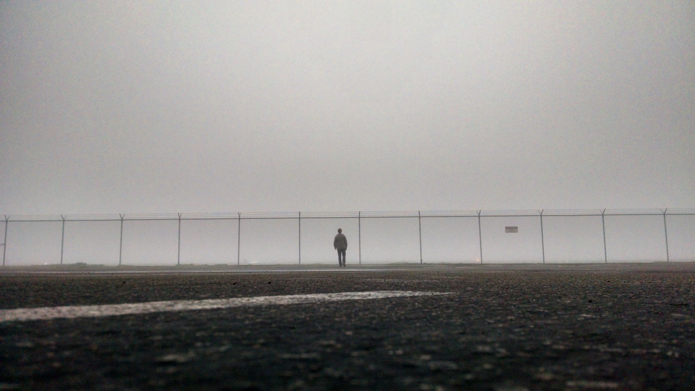
On occasion I upload photos onto Pexels for free creative use. I use a lot of creative commons
stuff in my games, so I try to share photos for free-use as a way of giving back to that community.
Curses!
A fun attamept at an improv game, using modified "Hello! My Name is..." sticker labels.
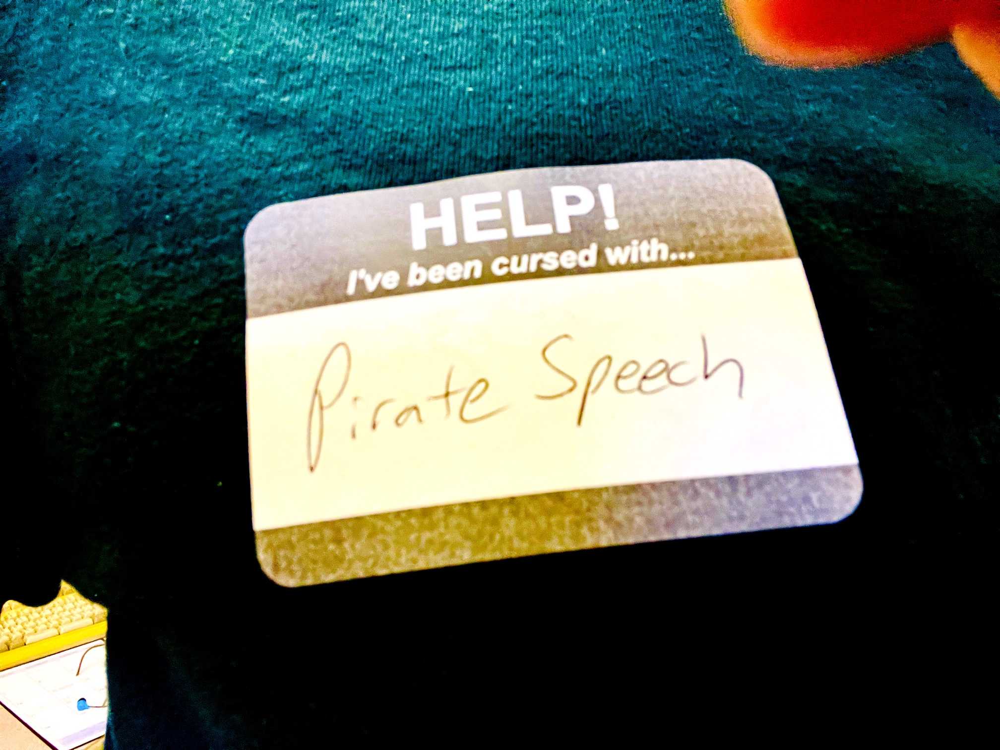
A simple game I put together with the help of fellow game designer, 🌱🌿🌲.
Inspired by recent readings into games for improv actors and Bernie Dekoven's Funny Games List,
the game utilizes a custom-made template for Avery sticker labels that players are meant to wear on their person like a name tag. They must act out the curse they have
placed upon themselves, attempting to trick other players into speaking a specific "word of power". If they are successful, they may peel off the sticker and place it onto
the other player, who must now enact the curse until they pass it on to someone else.
In the initial iteration, a lot of focus was placed on being able to "stack" curses onto other players at will. But to avoid pushing players too far out of Their
comfort zones, it was decided to start each player with 1 curse they they place on themselves first. House rules were strongly encouraged, however, if other players wanted
to find alternative ways to play with each other!
Plaster
A screensaver made for a collaboration with developers fromParadise.
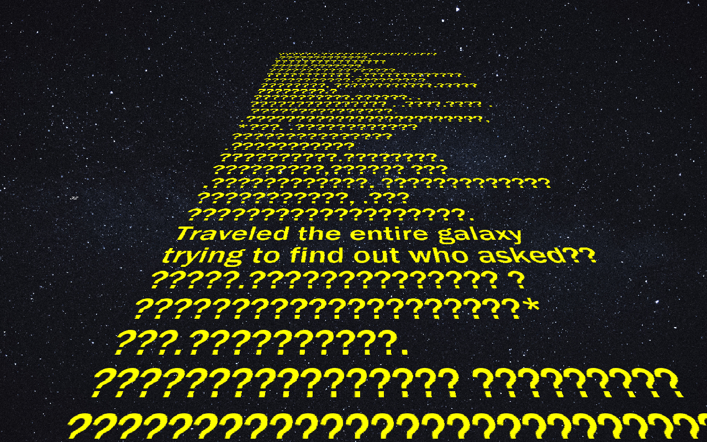
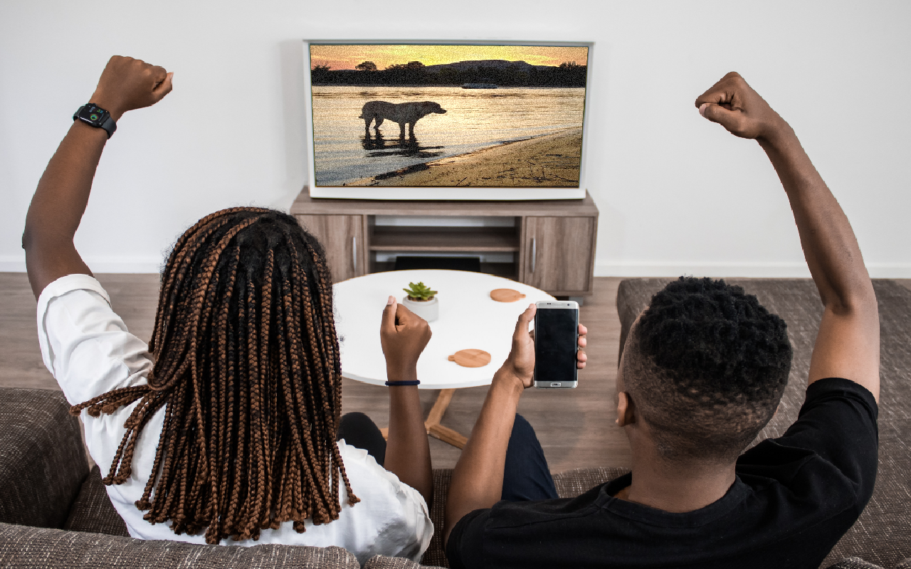
The screensaver displays the most-recent contents of the user's clipboard, both text and images, in ways that are intended to be playful.
It was designed to play off of the element of surprise, while also reminding the user how easily accessible data can sometimes become if we aren't
careful. All image templates were taken from Pexels and Wikimedia Commons and edited in GIMP, while the screensaver itself was made with GameMaker.
Please Hold
A small alt-ctrl game made for the 2022 ALT+CTRL @ HOME jam. Players take on the role of a customer service representative, holding a controller up to their heads as if it were a telephone.
They follow prompts on a screen, with customer satisfaction being determined by their accuracy and speed.
While the overall game mechanics are simple, I tried to lean into the silliness of using your controller in such an unorthodox manner in what was meant to be a professional setting.
The games aesthetics were intended to match that of bland corporate software.
I reached out to multiple friends to provide voice lines for the various customers,
giving them as much free-reign as they wanted to establish the characters as they saw fit. The result ended up being far better and added more character to the game than I ever could have accomplished on my own. Their credits can be found on
the game's itch page.
Gradience
A small artistic experiment in taking my photography and displaying it in a different way.
Gradience is a stack of photos of sunsets I have taken from my home in New Mexico. Minimizing the amount of objects in the sky, I tried my best to capture
nothing but the natural color gradients that appear in the sky at dusk. This webpage then simply stacks the photos on top of one another, and slowly
fades between each one in a sort of looping slideshow.
Viewers can adjust the speed of the cross-fade by pressing the up and down arrow keys on their keyboard.
Debugging Session
A small alt-ctrl game about squashing the bugs that live inside your keyboard. Kill the bugs by pressing the keys on your keyboard that they are currently crawling on before
they fly off and overrun your home!
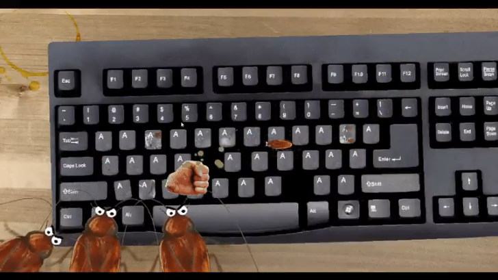
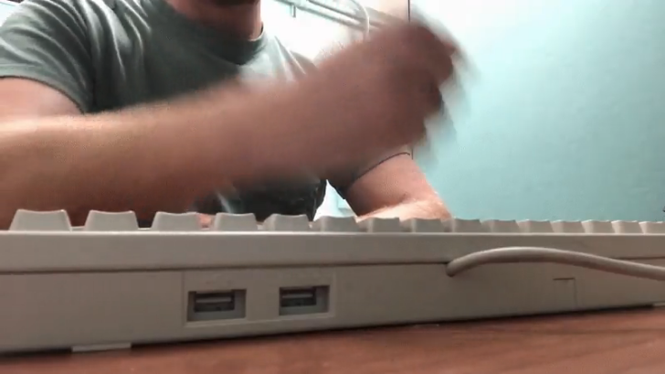
This is the first project that I attempted to do all of the artwork with public domain images, found primarily on wikimedia commons. While much of the audio was
taken from FreeSound, I recorded a handful of sound effects myself, in my car on lunch breaks. Twisting water bottles to make crunching sounds and pitching up my own
voice saying "ouch" to fill out the cacophony of sound effects was a real treat.
Scores are based on key-pressing accuracy
as well as survival time and total roaches killed. The game was paced in an effort to encourage players to "punch" their keyboard, hitting multiple keys at a time, but still playable
for people who might have issues with rollover or ghosting issues with their keyboards.
A Creative Fool's Manifesto
A manifesto written for the 2022 Manifesto Jam. I created it with the help of a close friend, Mackenzie Ito, as an exploration into my own creative motivations and practices, and what it means to be "foolish" in your work.
The writing came as a result of years of dipping into a variety of readings and studies based around the broader concepts of "play", in both practical and spiritual perspectives.
In reflecting on my work, and trying to understand the reasons for the decisions I made in designing and developing a game, I found that many of my motivations (or even lack-thereof) closely resembled that of a fool,
both in a historical and more modern context. In many ways, I still feel as though the manifesto only scratched the surface of my thoughts on this, but it was definitely helpful
in connecting some of those dots in my head.
Hexaguessimal
A wordle clone with acolorful twist, made for the 12th Eggplant Podcast Community Game Jam. Players are given 6 chances to guess a randomized color of the page's background. However,
their guesses must be in hexadecimal format.
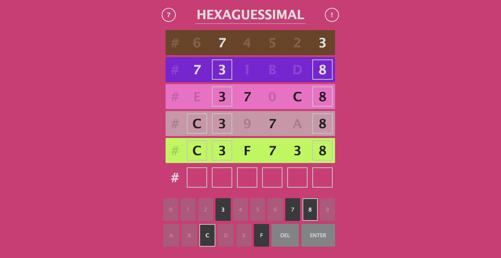
This game originally started as a joke response to a tweet, suggesting that every game designer "is to be legally obliged to make a wordle variant." While my response was intended
as a joke, the idea stuck in my head, and the theme for the current Eggplant Podcast game jam happened to be "fun with hexes." I looked for a tutorial to help me get started with the basic
ground work of a "wordle-clone" and built the game up from there.
I experimented with a variety of pre-built CSS animations to see how best to convey information to the player based on their guesses. By coloring each full guess, players would get some
assistance in determining which portion of their guess was too high or too low. In an effort to create a more "sharable solution", like the emoji-based ones used in the original wordle, I attempted to
create an image that provided a color gradient of the player's guesses, using an html canvas. However, I could not figure out a way to take the image and make it easily transferrable to a player's clipboard.
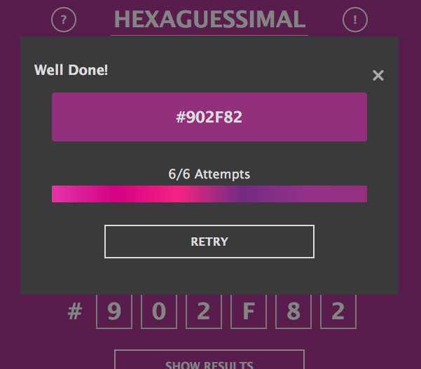
One area of design that needed improvement, however, was indicating to players if there were any duplicate hexadecimal characters within the solution. I unfortunately ran out of time before the
end of the jam to find a good solution to the problem, but feedback from players offered some helpful suggestions that I would like to explore in the future.
SUSTENANCE
An alt-ctrl game where 2-4 players must share a single mouse to survive. Players control an organism that has 2-4 different colored brains, representing each player. Each brain must eat the food
of it's color to avoid starvation. Once all the brains have died out, the game is over.
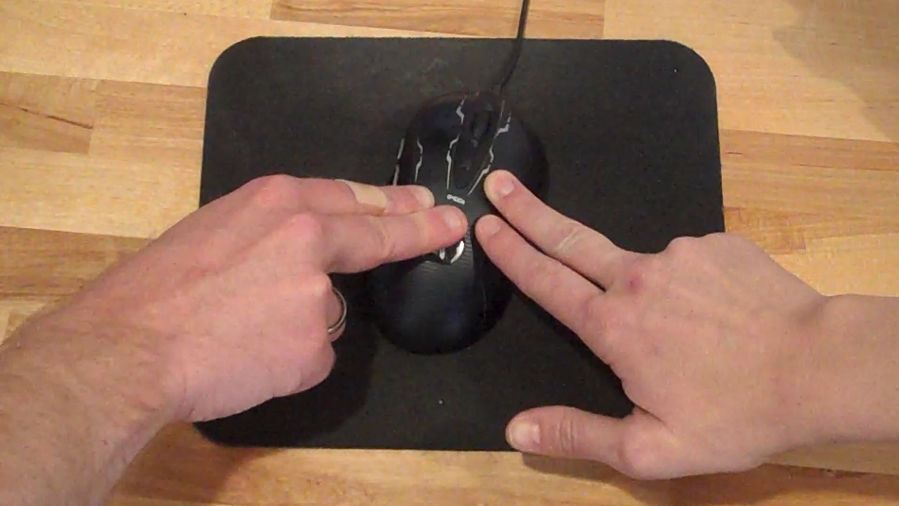
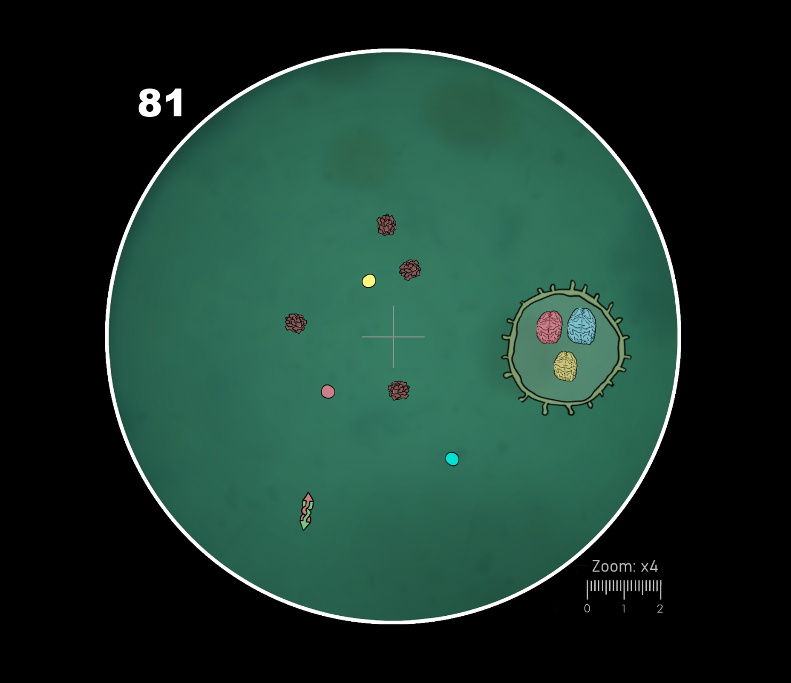
The game was originally designed to be competitive in nature, with players wrestling for control over the mouse, as a submission to the 8 Bits to Infinity Mouse Jam over the course of one week.
I spent the majority of the jam attempting to pull the game together, using assets created by friends (Rhaphiel Molinar for art, Symochi for music).
However, I did not spend any time until almost the end
of the jam playtesting, and the original design simply did not work. Given the quality of music and art that was provided to me, I felt the need to make another attempt at making the game more enjoyable overall.
I opted to redesign the game to be cooperative, and added obstacles that players would need to work together to avoid.
Shuriken
An alt-ctrl game where players use their mouse to simulate throwing ninja stars against an endless onslaught of enemies.
This game was my first real introduction into the world of alt-ctrl games, being heavily inspired by Yolk's on You by Jonny Hopkins. While Shuriken is a simple idea at it's core,
this simplicity allowed me to explore the pixellated aesthetics of the game. There is also a lot of room to expand on content, should I decide to revisit the game in the future.
Dynamo
An open-ended set of party games made and published for Move38's Blinks platform.
Dynamo's core functionality is simple - It's light is powered by touch. Pressing the button will charge your dynamo, but the charge only lasts for ~1 second.
With this core mechanic, we designed 3 different games with very flexible rules, and encouraged players to "think playfully" and create their own games and modify the ones we provided.
Dynamo was originally inspired by the game Chicanery, originally designed by Anna Anthropy. During the course of playtesting the original game, however, testers
naturally sought out new ways to play with the core mechanic. The developers at Move38 and I decided to lean into this, and ship a product that was 3-games in one, with a rule book than encouraged breaking the rules and creating
games of their own.
Havoc
A physical action game for Blinks with 2 or more players. Players choose between 3 weapons and fight to the death, attempting to line up their "lit" LED's with their opponents unlit ones to cause damage.
Last knight standing is the winner!
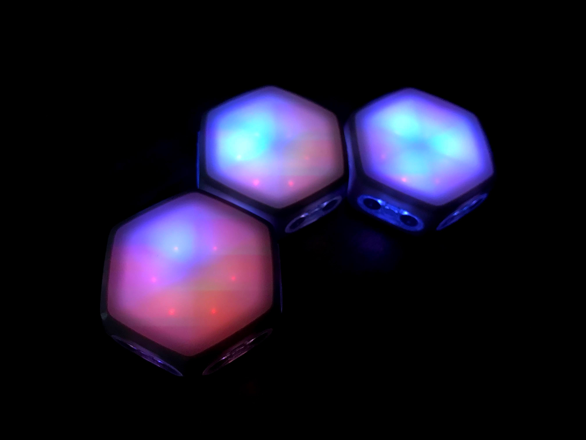
The game was loosely based on Egg Jarping. I had a lot of fun experimenting with different weapon styles, limited to the 6-LED display on a single Blink tile.
Each weapon is intended to fit different difficulties - if players wanted to give themselves or other players a "handicap", they could use a weapon with more LEDs, offering them more protection as well as additonal places to cause damage.
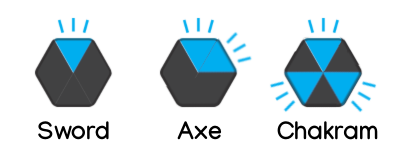
Hunt n' Peck
A silly alt-ctrl game, made (though not submitted) for a game jam hosted by Coolmath Games, where the theme was "use your head." Players use their nose to type the words that appear on the screen, being scored by
their accuracy as well as the number of words completed within the time limit.
A 2-player mode, titled "Head-To-Head", was also made for the game, whereby players would have to share a single keyboard and compete to type out words that only contained letters on their half of the keyboard.
In order to help create a smoother user experience, the words were also spoken to the players through their computer speakers, recorded by my friend Alex Pait. However, the mode was completed not long into the
height of the COVID-19 pandemic. As such, due to the nature of the intimacy of players keeping their faces so close together and on a shared keyboard, the mode was never really released in public builds.
Reinvent The Wheel
A casual game made for the 2017 Github Game Off, developed in Unity with a small group of students from the Video Game Development Association at
California State University, Long Beach, for PC and Mobile Platforms. I contributed to the project as a designer. The player is tasked with fashioning a “wheel” from a misshapen boulder within a small window of time.
Once the time is up, their “wheel” is rolled down a hill, it’s final resting point representing the player’s score.
Legend has it that Tim Schafer himself has played the game, and that he may have even chuckled at it.
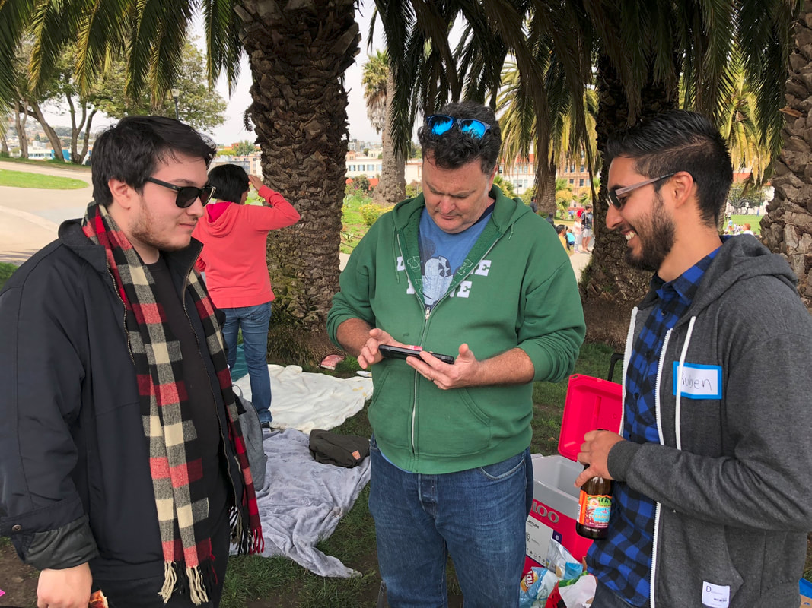
The Mountain (Mod)
A map created for the 3D Platformer game, A Hat in Time.
The player explores a multi-layered space (known in-game as a "Purple Time Rift") that follows the story of an Owl returning home after a long time away, only to find the village he grew up in
completely destroyed. By exploring each space and collecting hidden story pages, the player can discover what happened to the once thriving village, and earn a Time Piece at the end.
This map was built to further explore the capabilities of the Hat in Time modding tools while also applying what I've learned from my own level-design studies.
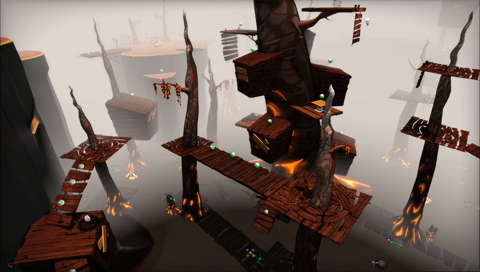
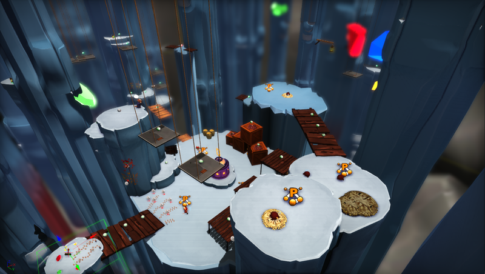
In an attempt to ensure that players had the opportunity to thoroughly navigate each space, with perhaps a different pathway each time, I would sketch "flow maps" to determine how evenly spread
player movement would be. If certain areas of the map created empty spaces or "dead zones" that the player would have interest in, I considered ways of opening up the space for traversal.
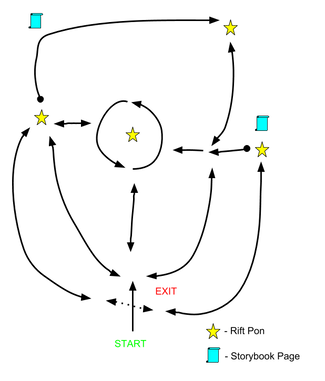
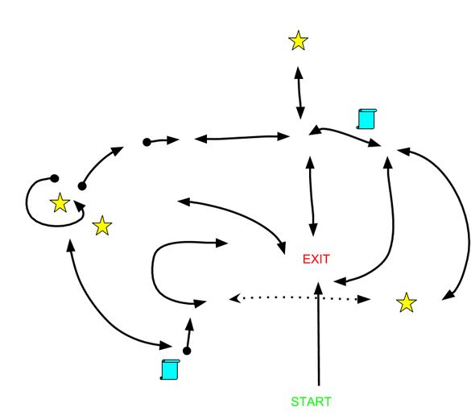
During the weeks following it's release, "The Mountain" was listed as one of Hat in Time's most popular playable mods, and currently holds a 5-star rating on Steam Workshop.
Gamanteau
A small game of word play, made as a last-minute submission to the 2018 Github Game Off.
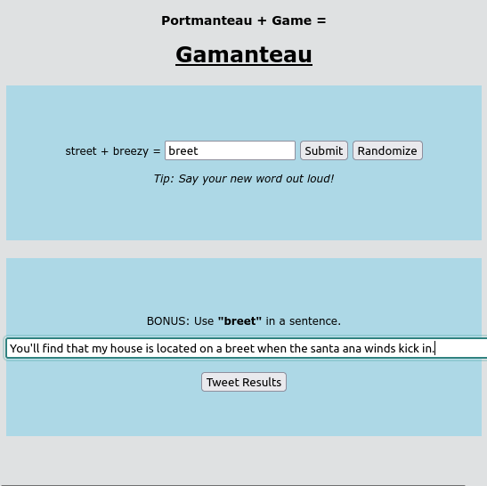
The theme for the github game off jam was "Hybrid", and I thought very early on into the jam that this sort of word-mashing game would be a great fit. My friends and I ocassionally
partake in these sort of word-play games, and I thought that the idea of being given two random words would translate well into the digital sphere. I had initially explored
creating this in Pico-8, using an in-game keyboard, but I realized far too late into the jam that going the route of an html page with basic javascript made much more sense.
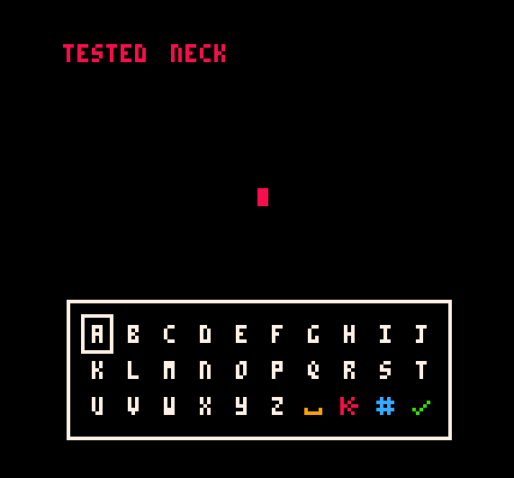
One decision I made in making this that I'm particularly proud of was providing the option to tweet your results. I had explored some ways in setting up a score board, with players being able
to upvote or downvote entries. However, this was far beyond the scope that I could manage for the jam. I also began to worry about ways that players might abuse the game with any sort of toxicity,
particularly with the capability to enter in their answers freely. By allowing players to "submit" their results of the game via twitter, they hold themselves accountable for what they enter.
Plus, by adding the "#gamanteau" hastag, twitter can sort of double as a scoreboard that I didn't even need to host!
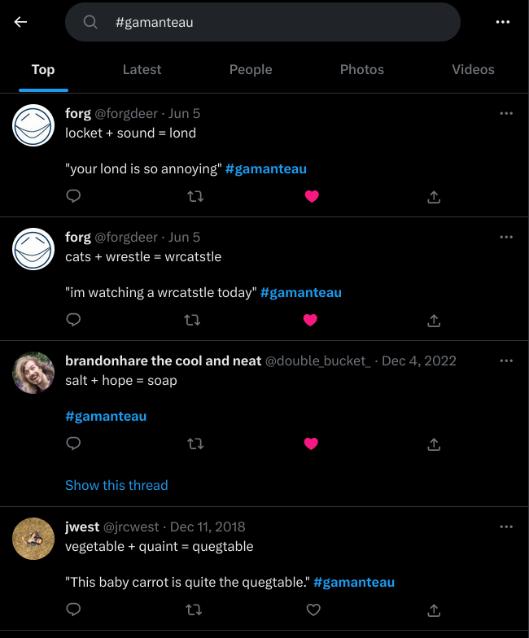
A full post-mortem for making this may be found on my old blog.
Mafia's Icebox (Mod)
A map created for the 3D Platformer game, A Hat in Time.
The player traverses an obstacle course (known in-game as a "Blue Time Rift") that takes place within an industrial freezer in order to reach the time piece at the end.
This map was built purely for the purpose of learning the modding tool set and becoming familiar with the basics of the Unreal Development Kit.
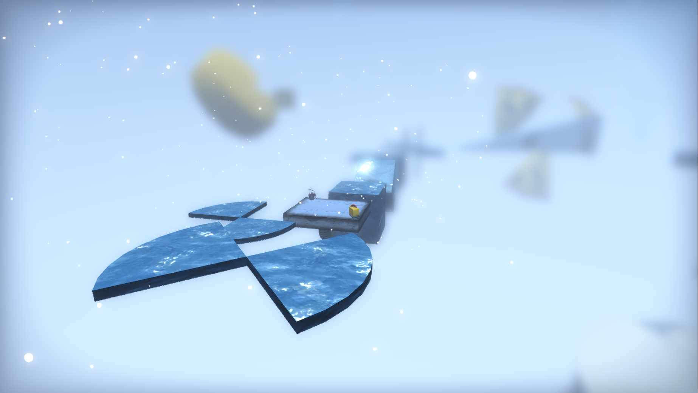
The theme idea originated from one particular mechanic that the player has from the beginning of the game: the ability to dive and slide down sloped surfaces. The ability to slide led to the
idea of using greasy metal or ice as slippery surfaces, which, in turn, led to the idea of using an industrial freezer as the setting. This was accomplished through the careful application materials,
decals, and world lighting and fog, while using obstacles that encouraged continuous, fluid movement, placing an emphasis on the dive-and-slide mechanic. For additional decorative finish, I placed
food-related meshes throughout the level, with the end goal resting on a desirable tub of ice cream.
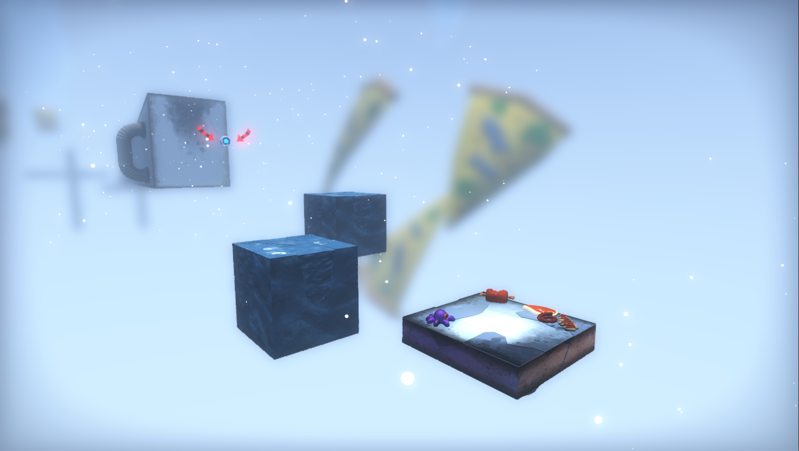
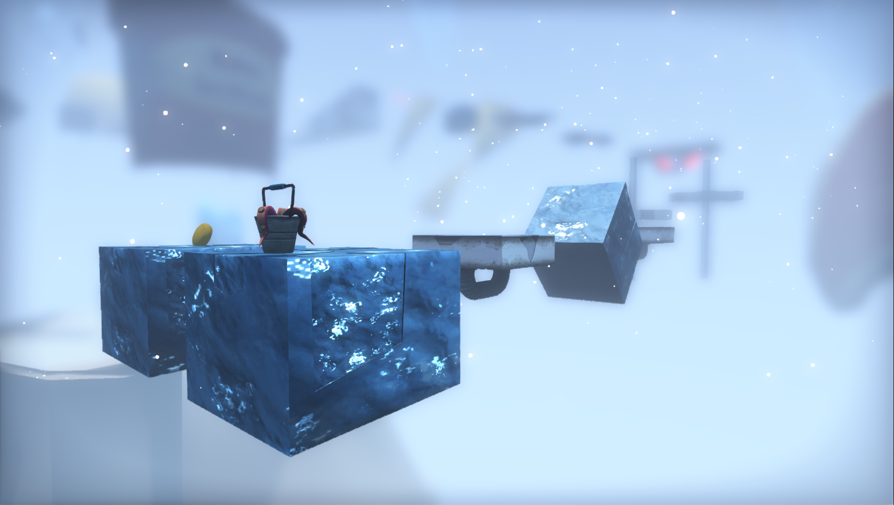
In March of 2021, the level was selected by Gears for Breakfast to be included in their "Challenge Road" events, a rotating set of levels offered to players as community-made challenges to overcome.